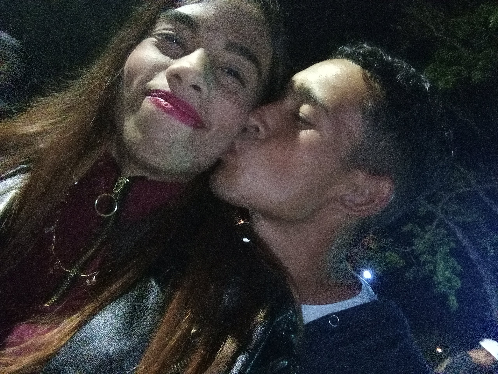

La verdad es que no sé qué decir después de todo lo que hemos vivido, pero lo voy a intentar. Sé que debes estar molesto conmigo; contigo mismo no lo sé. Tal vez solo quiero decir que conocerte fue una de las cosas más increíbles que pudo haberme pasado. Las horas, meses y años que pasé a tu lado no las reemplazaría por nada del mundo. Esa sensación que tengo al verte era siempre uno de mis momentos favoritos. A pesar de todo, siempre serás parte de mí, aunque no estemos juntos. Siempre tendrás un lugar en mi corazón y que sepas que desde el primer día que supe que me enamore de tí, para mí siempre fuieste el único. Ahora eres ese sentimiento inexplicable, el cual no sé cómo comprender. No sabes cómo me duele todo lo que pasó, no saber lo que siento y lastimarte en el proceso. Tal vez creas que solo soy una niña que no sabe tomar una decisión, pero es que yo no quiero ser alguien más del montón. No me quiero sentir así de nuevo, no quiero volver a ser utilizada. Sí, soy una niña, pero soy una niña lastimada, la cual tiene miedo de caer más bajo y no volver a levantarse. Me toca volver a crecer y aprender a ser fuerte; necesito eso, necesito volver a sentirme segura. Pero recuerda que en las buenas y en las malas, aunque tú no me hables o yo no te hable, siempre estaré ahí para ti. Hago esto porque quiero que tengas algo con lo cual poder recordar parte de lo que vivimos; si lo aceptas o no, es tu decisión y la respeto, sea cual sea. Quiero desearte un feliz cumpleaños, corazón.